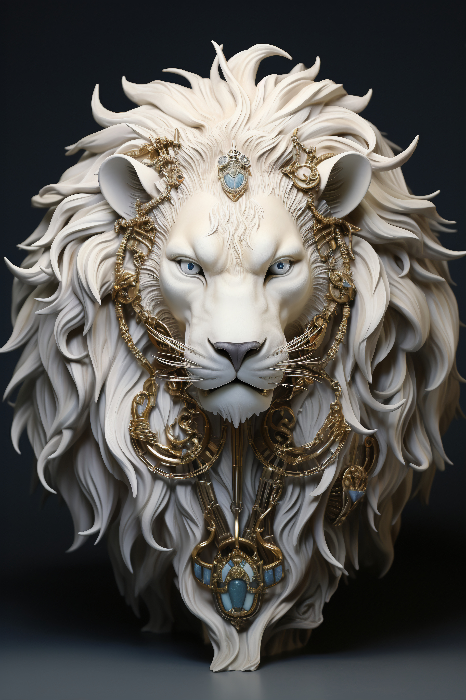
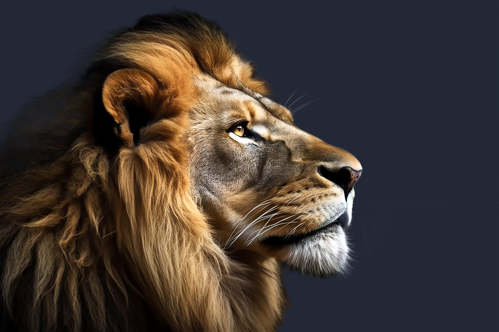
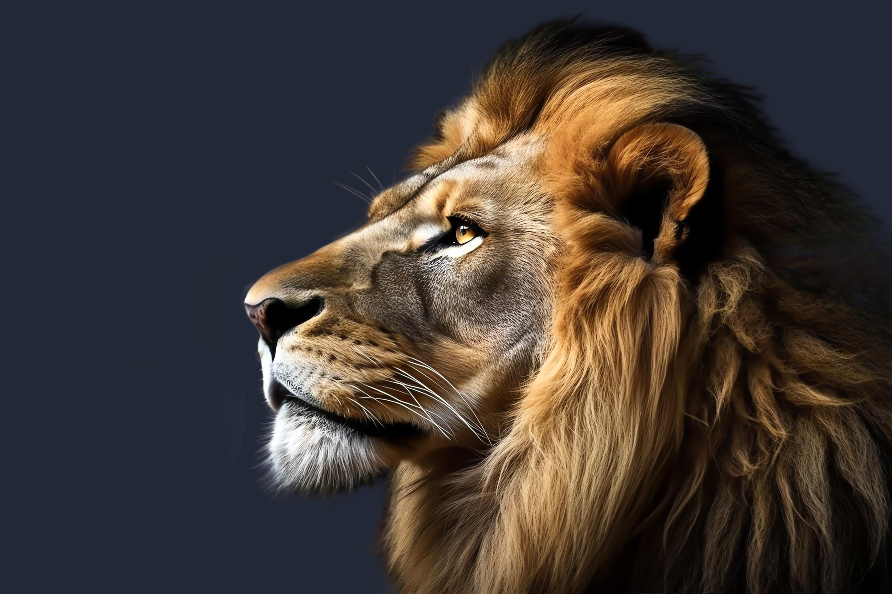

Лев — крупный и мощный хищник, представитель из семейства кошачьих. Это одна из самых сильных и могущественных кошек на Земле, уступает лишь амурскому тигру в размерах, но на африканском континенте кошки крупнее не сыскать. Поэтому в культуре львы стали считаться настоящими “королями всех зверей”, а свою известность приобрели еще с незапамятных времен, постоянно появляясь в различных легендах народов. Это во многом уникальное животное.Самое большое отличия льва от других кошек — их общительность и социальность; они живут в группах, которые называются прайдами. Львы относятся к семейству больших кошачьих, а это означает, что самцы и самки могут рычать. Это дневное животное, но при необходимости, вызванной опасностью, легко приспосабливается и к ночи, обладая отличным ночным зрением. С 1996 года включен в красный список МСОП, поскольку с 1990-х годов численность львом сократилась на 43%. Львы является широко признанным животным символом — он часто использовался и продолжает использоваться в различных скульптурах и картинах, на национальных флагах, в фильмах и литературе. Ученые находили изображения львов, датирующиеся временами раннего палеолита; а фигурки и картинки, найденные в пещерах Ласко и Шове во Франции были созданы целых 17 000 лет назад.


Породы
Азиатский, Персидский, Индийский Лев
Сенегальский или Западно-Африканский Лев
Северо-Конголезский Лев
Восточно-Африканский или Масайский лев
Юго-Западный или Катангский Лев
Юго-Восточный или Трассвальский Лев
Lion
Фотогалерея